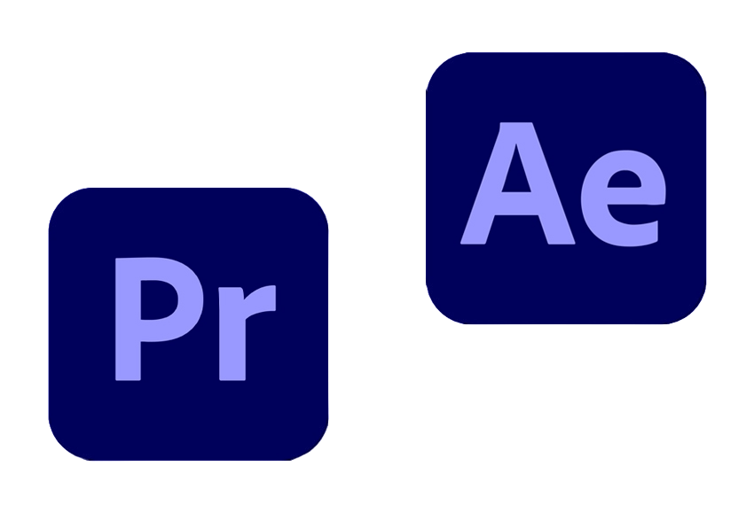

¡BIENVENIDO!
¡Hola! Soy Ayrton, aprendiz continuo y un apasionado editor de video freelance con un ojo creativo y una pasión por contar historias a través de la edición visual. En mi blog, encontrarás un espacio dedicado a la magia detrás de las imágenes en movimiento y cómo la edición puede transformar cualquier proyecto en una obra maestra cinematográfica.
¿QUIÉN SOY?
Soy de la República Argentina. Tengo 27 años y me dedico a la edición de video
desde los 20. Me encantan las ciencias, sobretodo la astronomía.
También estudio Sistemas de Información en la Universidad Autónoma de Entre Ríos.
Me considero profesional de la edición de video con años de experiencia trabajando en una variedad de proyectos, desde videos corporativos hasta cortometrajes y contenido para redes sociales. Mi enfoque se centra en capturar la esencia única de cada historia y llevarla a la vida a través de una edición cuidadosa y creativa.
LO QUE OFREZCO:
Edición Creativa: Transformo tus imágenes en bruto en narrativas visuales impactantes, utilizando las últimas herramientas y técnicas de edición.
Videos Corporativos: Impulsa tu marca con videos corporativos profesionales que cuenten la historia de tu empresa de manera atractiva.
Contenido para Redes Sociales: ¡Haz que tu marca destaque en las redes sociales con videos dinámicos y cautivadores!
¿POR QUÉ ELEGIRME?
Compromiso: Me comprometo a ofrecer resultados excepcionales y a trabajar estrechamente contigo para garantizar que tus visiones cobren vida.
Creatividad sin Límites: Cada proyecto es una oportunidad para explorar nuevas ideas y enfoques creativos. No hay límites para la creatividad.
Profesionalismo: Con un enfoque profesional y un compromiso con la calidad, me aseguro de que cada proyecto cumpla y supere tus expectativas.
TECNOLOGÍAS
Adobe Premiere, After Effects y Photoshop
